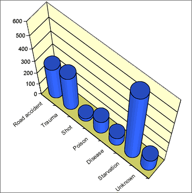

Bar charts can be very simple and need not take up much space in reports. Avoid the temptation to embellish them 'artistically' to make them more
visually appealing. These additions are collectively called chartjunk.
Bar charts can be very simple and need not take up much space in reports. Avoid the temptation to embellish them 'artistically' to make them more
visually appealing. These additions are collectively called chartjunk.Chartjunk
Bar charts can be very simple and need not take up much space in reports. Avoid the temptation to embellish them 'artistically' to make them more
visually appealing. These additions are collectively called chartjunk.
Chartjunk adds 'noise' to a bar chart and makes it harder to read the real information that is contains. Rather than adding chartjunk, draw it small or replace it with a frequency table.
A common form of chartjunk arises when each bar is drawn as a 3-dimensional object. When the resulting 3-dimensional picture is rotated, it often becomes harder to compare the heights of bars and to read off values from the axes. In particular, perspective views should be avoided.

Replacing bars with objects
A more serious problem arises when the rectangular bars in a barchart are replaced with pictures of objects. This often visually mis-represents the proportions in the different categories — the visual importance of a bar is determined by its area or volume, not its height.